Surtido sin venta
Curso del Área Salón de COTO.
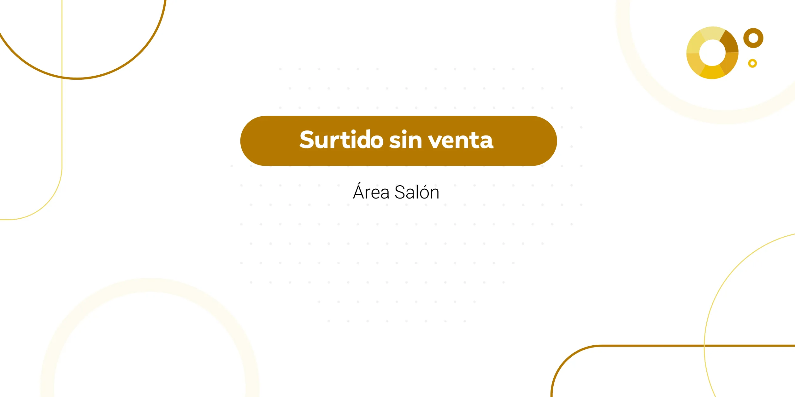
Introducción
El control de surtido sin venta nos permite ver qué productos no se están vendiendo. Esto nos ayuda a detectar si falta mercadería, si está mal ubicada o si hay algún problema con el stock. En este curso vamos a ver cómo armar el reporte, cómo leerlo y qué hacer en cada caso.
Objetivos de aprendizaje.
A. Detectar productos que no se vendieron en un período de tiempo.
B. Identificar problemas de stock, de exhibición en el salón y de faltantes a la venta.
C. Tomar acciones para mejorar la venta de esos productos.
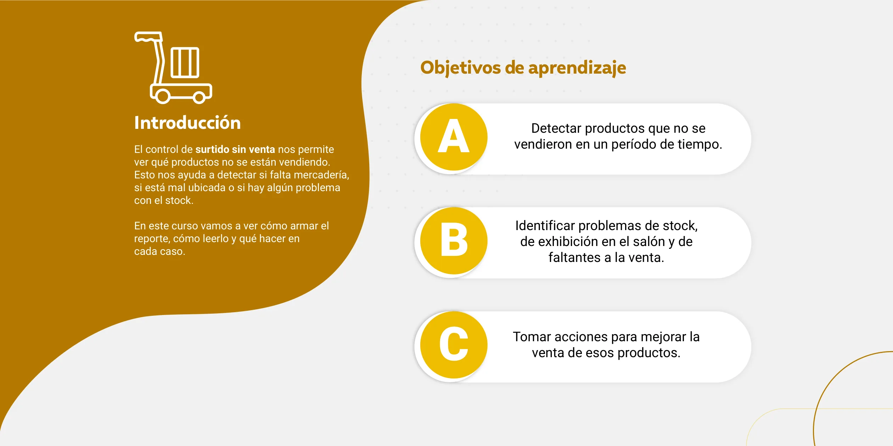
Índice de contenidos
Control de surtido sin venta.
- ¿Qué es el control de surtido sin venta?
- Algunos conceptos importantes.
- Cómo hacemos el reporte.
- Lo que vimos en este video.
- Qué hacemos con los productos.
- Lo que vimos en este video.
- Mini juego.
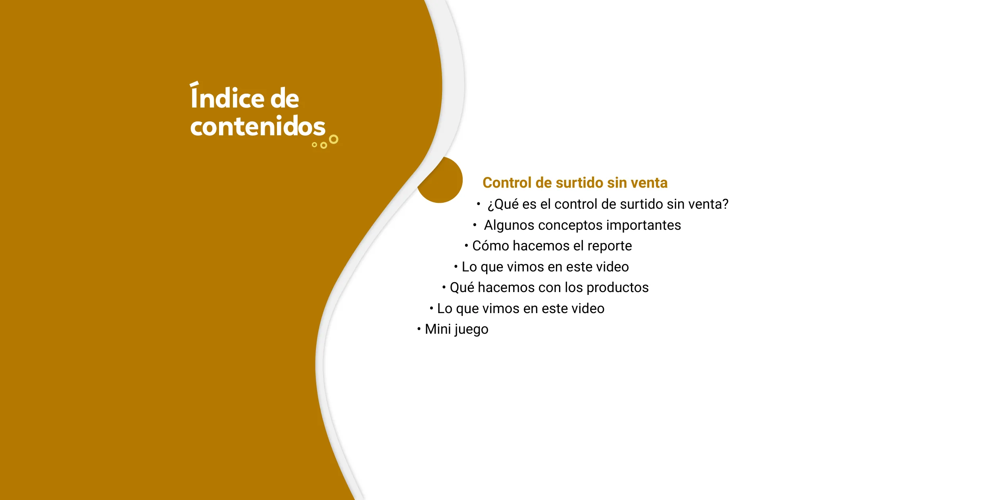
Control de Surtido sin Venta
Unidad 1.
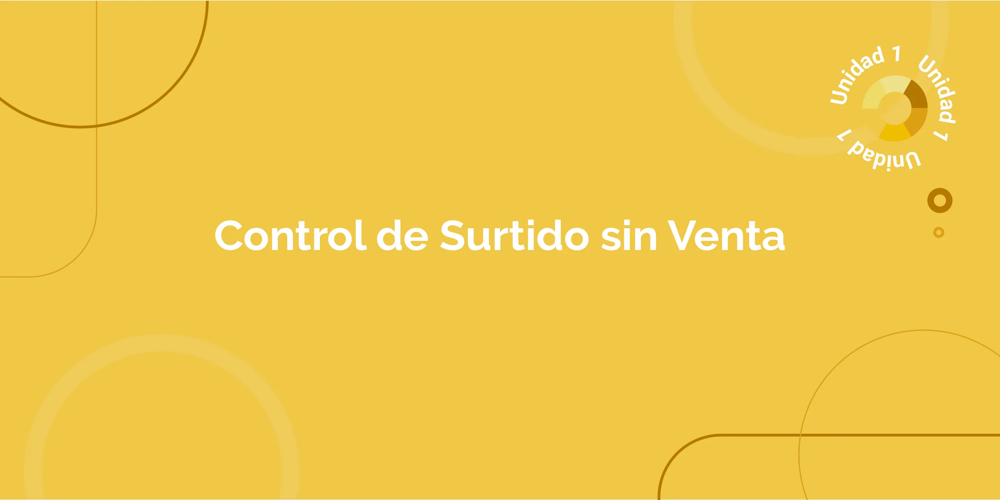
¿Qué es el control de surtido sin venta?
Es un reporte que, según la cantidad de días que elijas, muestra los productos que no se vendieron en ese tiempo, es decir, los que están hace varios días sin movimiento, sin ventas.
Este análisis nos ayuda a detectar:
- Productos que no están en la góndola.
- Productos que figuran con stock, pero no están ni en la góndola ni en el depósito. Es el falso stock.
- Productos mal ubicados o poco visibles.
- Productos en mal estado o vencidos.
- Productos con baja rotación, es decir, productos que se venden poco o muy lentamente.
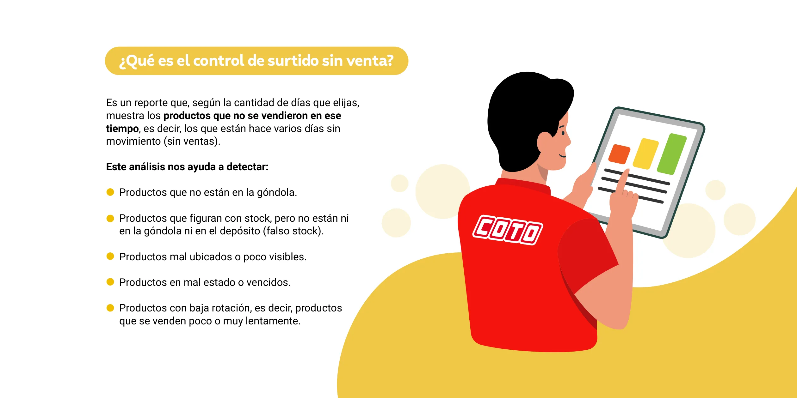
Algunos conceptos importantes
Hacé clic en cada concepto para conocer los términos que vamos a usar durante el curso. Son siete.
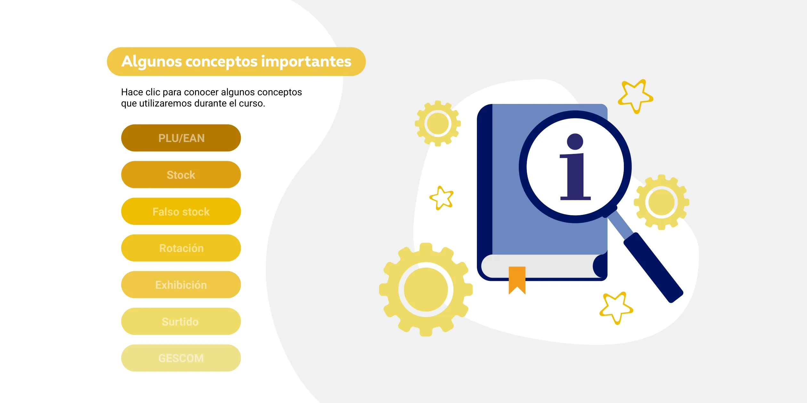
Cómo hacemos el reporte
En este video veremos cómo generar el reporte de surtido sin venta en GESCOM para obtener el listado de productos que no registran ventas.
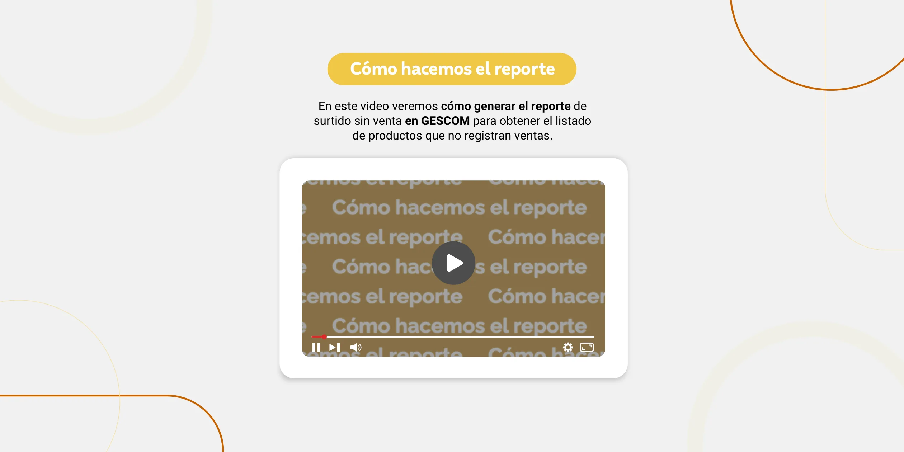
Lo que vimos en este video
Repasemos algunos puntos importantes. Abrí las dos fichas para seguir.
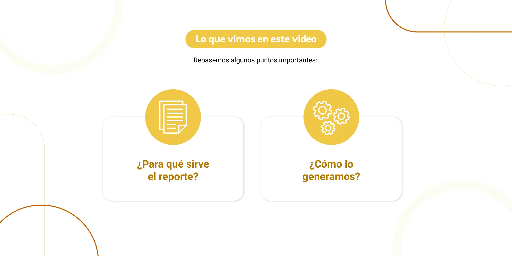
Qué hacemos con los productos
En este video veremos cómo verificar los productos del reporte en góndola y depósito, y qué acciones tomar según cada situación.
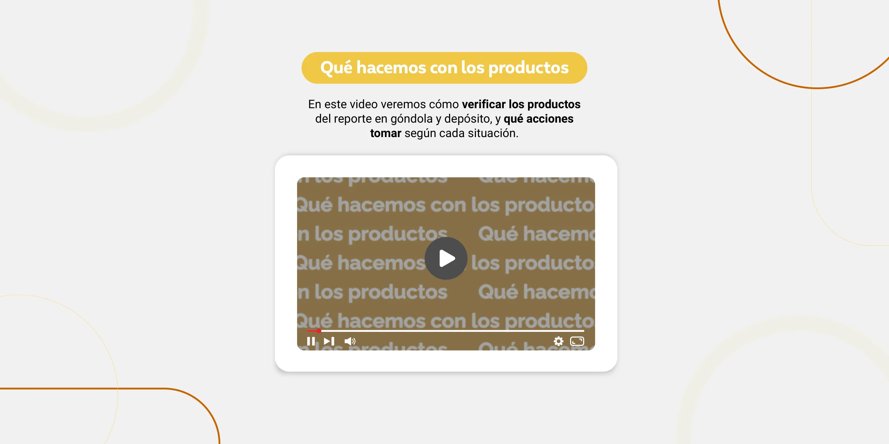
Lo que vimos en este video
Repasamos cómo gestionar los productos que aparecen en el reporte de surtido sin venta. Abrí las dos fichas para seguir.
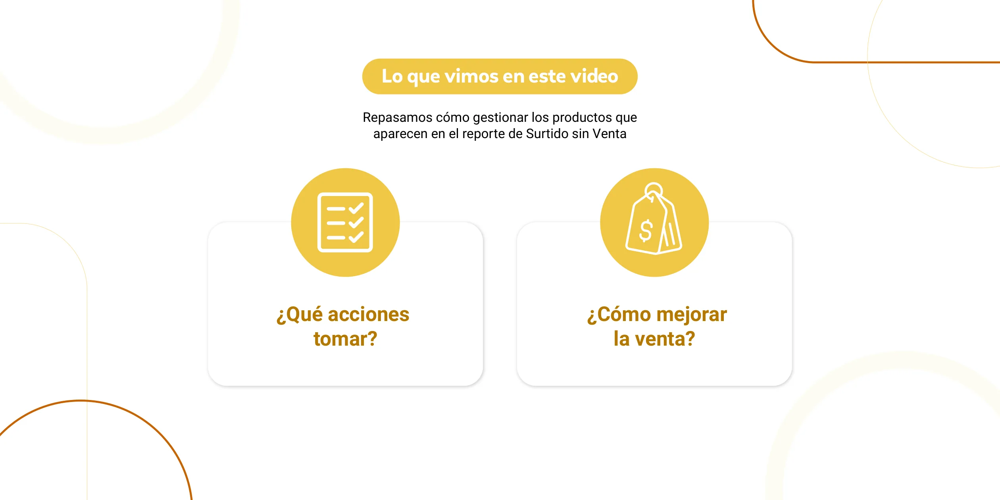
Mini juego
¡Bienvenido a este mini juego! En este juego se te van a presentar distintos conceptos y, dentro de varias respuestas, tenés que seleccionar la correcta. Observá cada situación, pensá antes de elegir y aprendé mientras jugás.
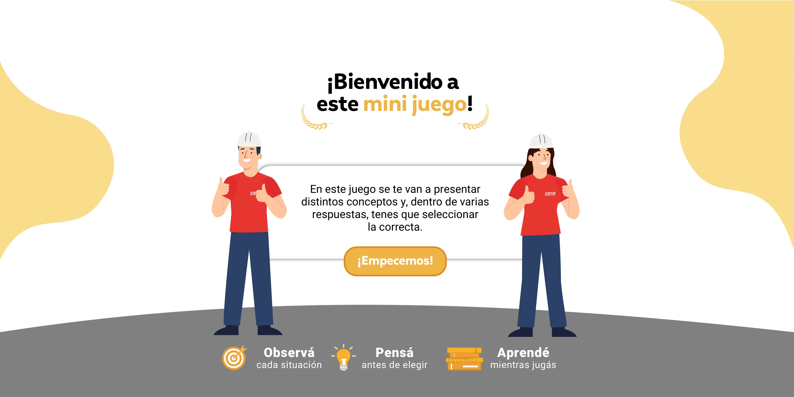
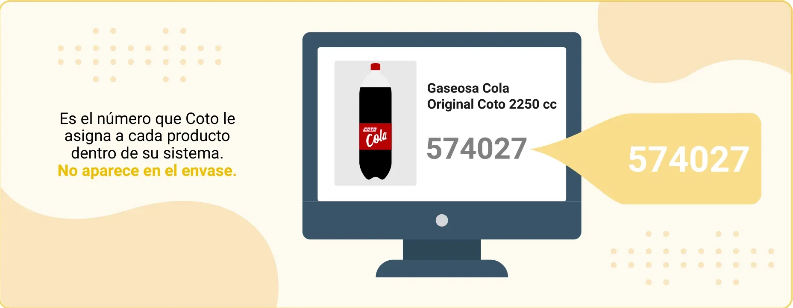
¡Terminaste el mini juego con éxito! Ya podés identificar lo que está mal en estas situaciones. ¡Seguí aplicándolo cada día!
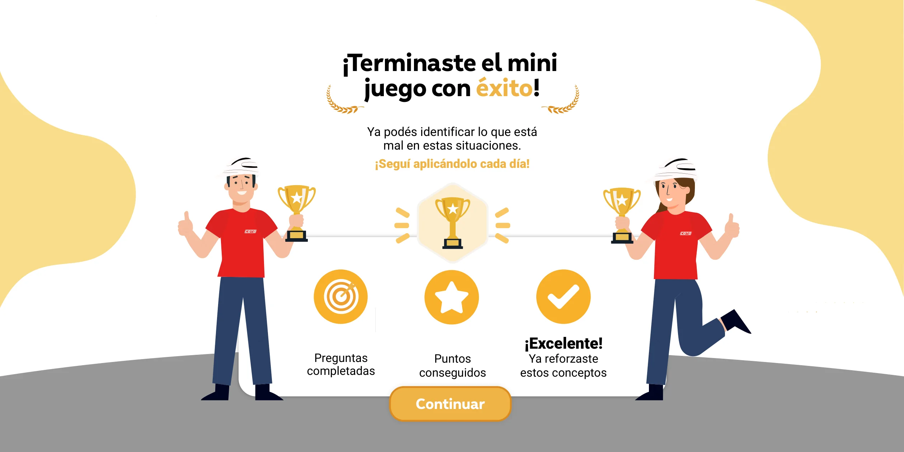
¡Ups! Estuviste cerca. Hacé clic en el botón reintentar para intentarlo de nuevo.
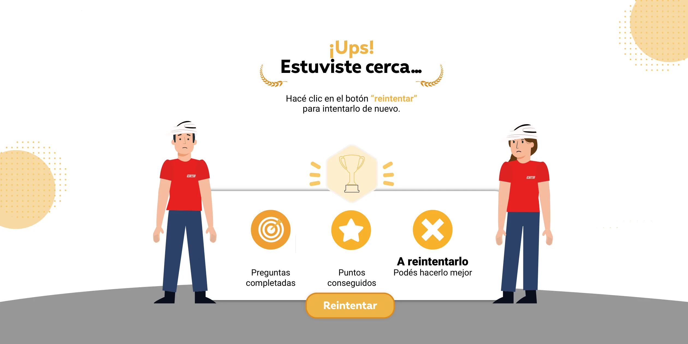
Últimos consejos
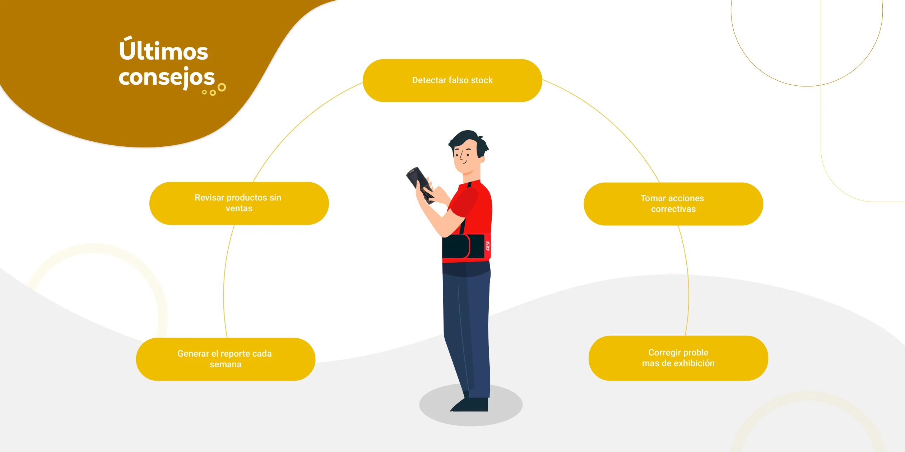
Detectar falso stock
Revisar productos sin ventas
Tomar acciones correctivas
Generar el reporte cada semana
Corregir problemas de exhibición
¡Felicitaciones!
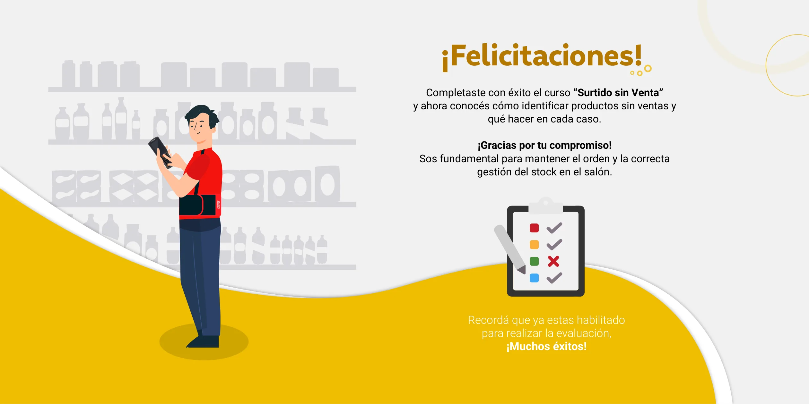
Recordá que ya estás habilitado para realizar la evaluación. ¡Muchos éxitos!
Completaste con éxito el curso “Surtido sin Venta” y ahora conocés cómo identificar productos sin ventas y qué hacer en cada caso. ¡Gracias por tu compromiso! Sos fundamental para mantener el orden y la correcta gestión del stock en el salón.
¡Curso completado!
Medalla de bronce
- 🥉Broncedesde 148
- 🥈Platadesde 190
- 🥇Orodesde 230
La evaluación del curso es un cuestionario aparte: la vas a encontrar en la plataforma.
Lo que vimos en este curso
El reporte
- Muestra los productos sin movimiento en la cantidad de días que elijas.
- Se genera en GESCOM, eligiendo sucursal y departamentos de salón.
- El listado sale en la pestaña “resumido”.
Qué detecta
- Productos que no están en la góndola.
- Falso stock: el sistema dice más unidades de las que hay.
- Productos mal ubicados, vencidos o de baja rotación.
Qué hacer
- Verificar cada producto en góndola y depósito.
- Reponer, ajustar el stock, decomisar, traspasar o devolver.
- Pedir cambio de lugar, más espacio u oferta para mejorar la venta.
- Repetir el control todas las semanas.